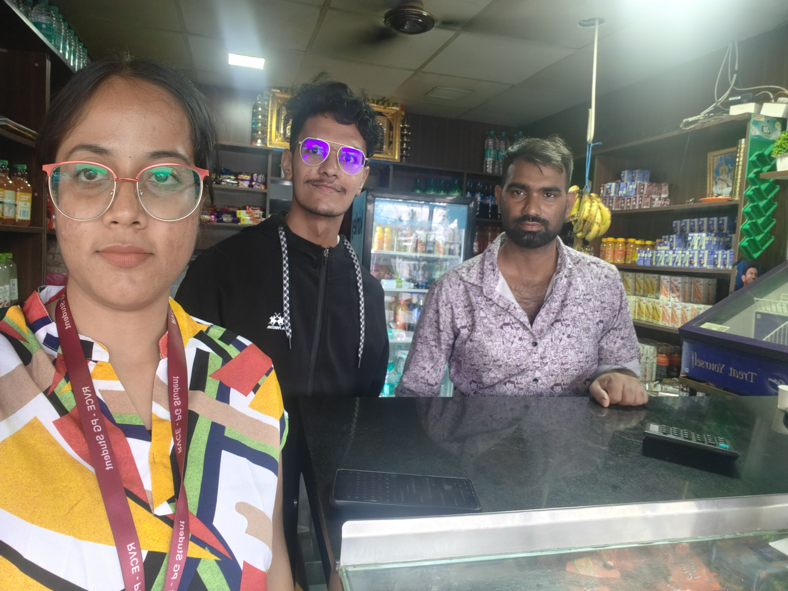
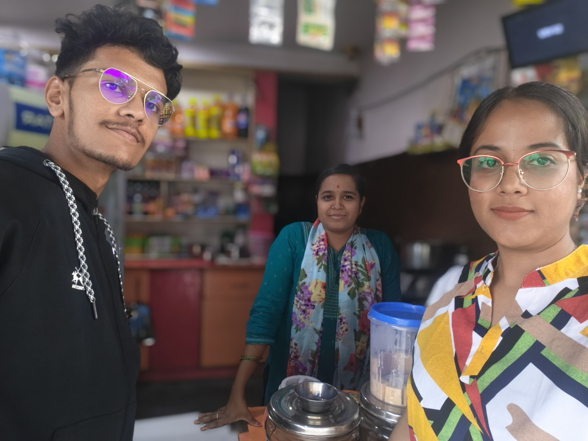
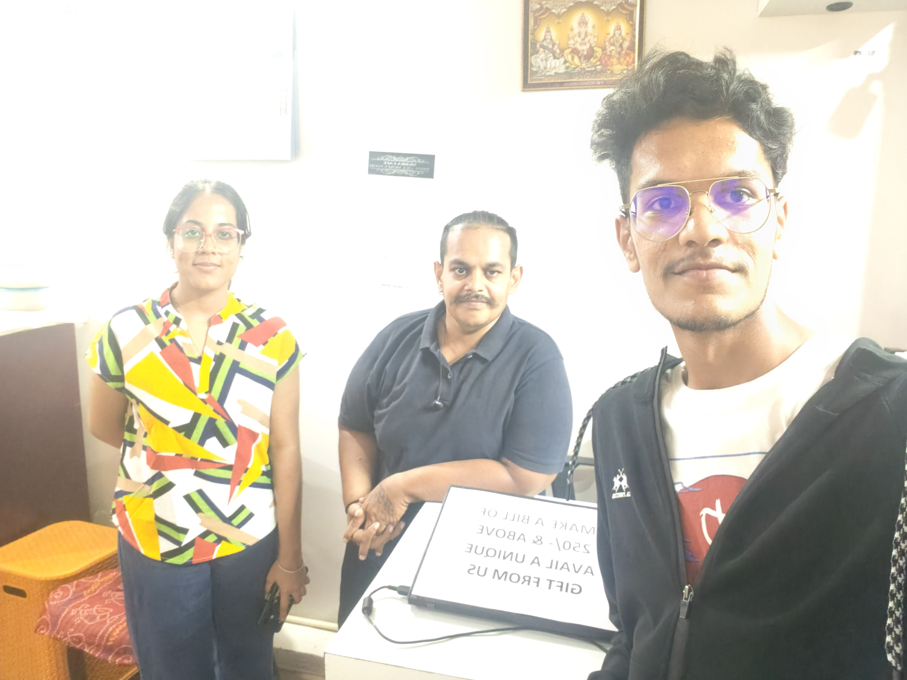

ReBox is an innovative, high-impact circular economy system designed to address the massive packaging waste generated by the e-commerce boom in urban India. By intercepting structurally intact cardboard boxes at the apartment level and redirecting them to local micro-vendors, ReBox bridges a critical resource gap. Every day, approximately 15 million e-commerce parcels are shipped across India, resulting in millions of single-use corrugated cardboard boxes being discarded. The current waste management pipeline is almost entirely linear: residents discard boxes, municipal waste handlers or informal scrap dealers collect them, and they are eventually sold to pulp recycling mills for a meager Rs. 3 per box (calculated by weight). This process is energy-intensive, chemical-heavy, and downcycles high-quality long fibers after only a single use. Meanwhile, local retail vendors, kirana store owners, bakeries, and hyper-local couriers routinely pay Rs. 20–35 for a brand new cardboard box of equivalent size.
The ReBox platform provides a closed-loop alternative that prioritizes REUSE over recycling. The system consists of three integrated layers: (1) Physical Collection Bins: Weather-proof green bins placed in gated apartment basements adjacent to elevator lobbies, providing a zero-friction disposal point; (2) Twilio WhatsApp Bot: A lightweight, QR-enabled mobile interface that allows residents to log drops in under 15 seconds and alerts registered vendors when boxes are ready for pickup, eliminating the need to download dedicated mobile applications; and (3) Analytics Dashboard: A web-based portal that tracks community leaderboards, RWA waste audits, and individualized carbon offset metrics (saving approximately 1.1 tonnes of CO₂ equivalent and 26,000 liters of water per tonne of corrugated paper reused). This report documents the complete, five-phase Design Thinking lifecycle of ReBox, demonstrating its viability, operational feasibility, and high user acceptance through extensive on-ground testing across Bengaluru, Hyderabad, Tumkur, Bidar, Kadapa, and Tirupati.
Rs.3
Scrap Value (Recycle)
Rs.25
Vendor Cost (New)
5-7x
Reuse Cycles
96%
Logo Neutrality
2. Primary & Secondary Research
To evaluate the feasibility and relevance of the ReBox concept, our team conducted extensive bilingual primary on-ground research. The surveys were conducted in major commercial and residential hubs, ensuring that we captured data from both the supply side (residents of gated societies) and the demand side (small commercial merchants). The primary goal was to map out on-ground operations, understand user habits, and verify pricing sensitivities.
Primary Data Collection Scope
Resource Type
Target Count
Surveys Collected
31 Bilingual Survey Responses
Shopper Interviews
10 Detailed 1-on-1 Interviews
Audio Recordings
8 Shopkeeper/Vendor Recordings
Field Photographs
27 Direct Evidence Photos
Geographic Research Clusters
On-ground primary field activities were distributed across cities representing various tiers of urban density:
Tier 1 Metros: Bengaluru (Bellandur, HSR Layout, Agara), Hyderabad (Kachiguda). These represent high-density residential IT corridors.
Tier 2/3 Locations: Tumkur, Bidar, Kadapa, and Tirupati. These represent commercial trading hubs and regional educational zones with distinct waste ecosystems.
Secondary Data Sources: Reports from the Ministry of Environment, Forest and Climate Change (MoEFCC), CPCB solid waste management audits, and e-commerce logistics benchmarks (RedSeer Consulting).
3. STP (Segmentation & Targeting) Analysis
An STP framework was executed to segment our market and target specific high-volume nodes for our reusable packaging loop system, ensuring that we design for maximum volume density and minimal logistics overhead.
Market Segmentation Breakdown
Our segments are split into two primary stakeholder groups:
Online Shoppers (Supply Side)
Geographic: High-density urban gated societies (100+ apartments) in IT corridors (Bellandur, HSR Layout).
Demographic: Age 21–45, middle to upper-class, corporate employees with high online order frequencies.
Psychographic: Environmentally conscious but time-poor; feels eco-guilt but defaults to trash due to balcony space clutter.
Behavioral: High frequency of parcel arrivals (2-4/week), low tolerance for friction.
Local Retailers & Kiranas (Demand Side)
Geographic: Local shops within a 500m walkshed radius of targeted apartment nodes.
Demographic: Owner-operated kiranas, fruit merchants, bakeries, and regional logistics franchisees (DTDC, Professional Couriers).
Psychographic: Pragmatic, highly cost-sensitive, brand-neutral (unconcerned by printed Amazon/Flipkart branding).
Behavioral: Travels 20+ km to wholesale markets to buy new packaging, reuses packaging until breakdown.
Targeting Selection Matrix
We prioritized segments that offer the highest box density and lowest logistical overhead:
Target Segment
Logistical Advantage
Adoption Catalyst
Priority
Primary: Gated Societies (200+ units)
High density (100+ boxes/week in one basement).
RWA alignment, eco-badges, decluttering.
High (Primary)
Secondary: Local Retailers & Kiranas
Hyper-local distance (<500m). Self-pickup is viable.
80% packaging cost reduction (Rs.5 vs Rs.25/box).
High (Demand)
Tertiary: Individual Houses
Low density. Scattered pickup routing.
Manual collection only.
Low (Deferred)
4. Value Proposition Canvas
Using the Value Proposition Canvas (VPC), we mapped customer profiles to our system features to ensure a strong product-market fit. This mapping aligns the emotional and physical triggers of residents with the financial constraints of micro-merchants.
Gain Creators: Integrated local loop, direct connection to resident waste stream.
5. Focused Group Interviews
Two distinct focused group interviews were conducted in Bellandur, Bengaluru to gain deeper qualitative feedback on operational bottlenecks and user convenience thresholds.
Resident Focused Group (8 Participants)
Setting: Lobby Area, Green Meadows Apartment, Bellandur (45 minutes).
Consensus on Clutter: "We stack boxes in our utility balcony until it is unmanageable, then we dump them down the garbage chute."
Friction Threshold: 7 out of 8 participants said they would refuse to download another mobile app just to log recycling. They suffer from app fatigue and security paranoia.
Convenience Priority: Bins must be located on the direct path to the car park or basement exit, otherwise they won't be used. A distance of even 20 meters off-path decreases use by half.
Quote: "A basement bin right next to the elevator lobby is something literally everyone in our tower would use."
Vendor Focused Group (5 Shopkeepers)
Setting: Tea Stall near Agara Market (30 minutes).
Branded Packaging: 5 out of 5 merchants confirmed that pre-printed logos (e.g., Amazon, Flipkart) do not impact customer trust at all. Customers only care about the safety of their items.
Self-Pickup Viability: All shopkeepers agreed that walking or sending a helper 200–500m to retrieve boxes is much better than traveling to wholesale markets.
Pricing consensus: ReBox pricing at Rs.2–5 was considered extremely attractive compared to Rs.20–35 wholesale new purchases.
Quote: "If boxes are available at the society gate, we will buy them every day. It saves us travel and money."
6. Questionnaires
Structured, bilingual surveys (English & Kannada/Telugu) were designed to collect quantitative markers. The questionnaires targeted three main archetypes: Shoppers, Shopkeepers, and Society Guards, establishing a robust data baseline.
Key Questionnaire Categories & Sample Questions:
Online Shoppers: Frequency of ordering, storage time for waste, current disposal methods, willingness to use basement bins.
Sample: "How many e-commerce boxes does your household discard in an average week? (ವಾರಕ್ಕೆ ಸರಾಸರಿ ಎಷ್ಟು ಪ್ಯಾಕೇಜಿಂಗ್ ಬಾಕ್ಸ್ಗಳನ್ನು ಎಸೆಯುತ್ತೀರಿ?)"
Local Shopkeepers: Weekly box requirements, monthly budget on packaging materials, distance traveled for wholesale sourcing, brand logotype neutrality check.
Sample: "Would you purchase sturdy second-hand cardboard boxes with printed e-commerce logos (Amazon/Flipkart) for Rs.5? (ಅಮೆಜಾನ್ ಲೋಗೋ ಇರುವ ಬಳಸಿದ ಬಾಕ್ಸ್ಗಳನ್ನು 5 ರೂಪಾಯಿಗೆ ಖರೀದಿಸುತ್ತೀರಾ?)"
Guards/RWAs: Security management during external vendor entries, cleanliness checks in basement storage.
Sample: "How much time is spent checking in external waste buyers? (ಹೊರಗಿನ ತ್ಯಾಜ್ಯ ಖರೀದಿದಾರರನ್ನು ಪರಿಶೀಲಿಸಲು ಎಷ್ಟು ಸಮಯ ತೆಗೆದುಕೊಳ್ಳುತ್ತದೆ?)"
A full set of the 42 questions is compiled in the repository's questionnaire sheets, which served as the statistical foundation for the Define phase.
7. User Journey Mapping
We mapped the sequential emotional journey of a resident disposing of e-commerce packaging to identify core friction points (pain points) and design opportunities. A visual overview of this sequence is illustrated in the journey map below:
Stage
Action
Underlying Thought
Emotion / Value
Opportunity for Intervention
1. Package Arrives
Receives delivery, unboxes item.
"I love this item, but what do I do with the box?"
😊 Excited
E-com packaging could contain a ReBox QR pre-printed.
2. Clutter Accumulates
Places box in utility balcony.
"It is taking up too much balcony space."
☹️ Frustrated
Provide a box flattener to minimize volume.
3. Disposal Choice
Decides to discard. Kabadiwala is unavailable.
"I guess I have to throw it in the dry waste chute."
😟 Guilty
Place a clear physical ReBox bin in the basement lobby.
4. Bin Discovery
Sees Green Bin in basement, drops box.
"Oh, this bin is for cardboard! Let me drop it here."
🙂 Relieved
Clear posters showing flattening instructions.
5. Interaction (QR)
Scans QR code on the bin.
"Twilio WhatsApp opened. This is easy, no app needed."
😀 Satisfied
Auto-detect resident coordinates from QR metadata.
6. Environmental Loop
Receives carbon score confirmation.
"I saved 200g CO2 and supported Ramesh Kirana!"
🏆 Proud
Enable sharing on society group chats.
Figure 1.1: Collaborative User Journey Map and Empathy Mapping Sticky Notes
8. Empathy Mapping
Using the profiles of our two main stakeholders, we designed empathy maps representing their thoughts, behaviors, and environmental frustrations. This helps the design team stay grounded in real user feelings.
Empathy Map: Priya, 28 (Online Shopper)
Says: "Boxes take up too much utility space." / "I'll sort them out later."
Thinks: "I order online so much, I'm contributing to landfill waste." / "Somebody could reuse this sturdy box."
Does: Hoards boxes on the balcony, collapses them only when space runs out, defaults to dry waste bin.
Feels: Eco-guilt for throwing clean packaging, annoyed by Balcony clutter, overwhelmed by app downloads.
Empathy Map: Ramesh, 45 (Local Shopkeeper)
Says: "Cardboard box prices keep increasing." / "My monthly packaging budget eats my margins."
Thinks: "I wish there was a cheap, local supply of boxes." / "I don't care about logos, sturdiness is what matters."
Does: Travels long distances to wholesale markets, reuses damaged boxes, purchases high-cost plastic covers.
Feels: Stressed about operational costs, frustrated by travel time, pragmatic about branding materials.
9. Elevator Speech
"Every day, millions of perfectly good e-commerce boxes are crushed and destroyed — while the kirana store next door pays Rs.25 for a new one. ReBox places a simple green bin in your apartment basement. You drop your Amazon box in — zero effort, zero apps. Within hours, a local vendor picks it up for Rs.5. Your clutter becomes their savings. Your guilt becomes their profit. It's not recycling — it's reuse. And it starts with your next delivery."
— ReBox 30-Second Elevator Pitch
10. Field Evidence Gallery
The following on-ground photographs document our visits, vendor interviews, and baseline observation of corrugated cardboard waste handling in gated complexes across multiple cities:

Figure 1.2: Cardboard waste pile-ups in an apartment garbage room (Supply side)

Figure 1.3: Interviewing a local fruit vendor using cardboard boxes for customer packaging (Demand side)

Figure 1.4: Cardboard boxes accumulated at a local Kirana store (Ramesh Kirana Store, HSR Layout)